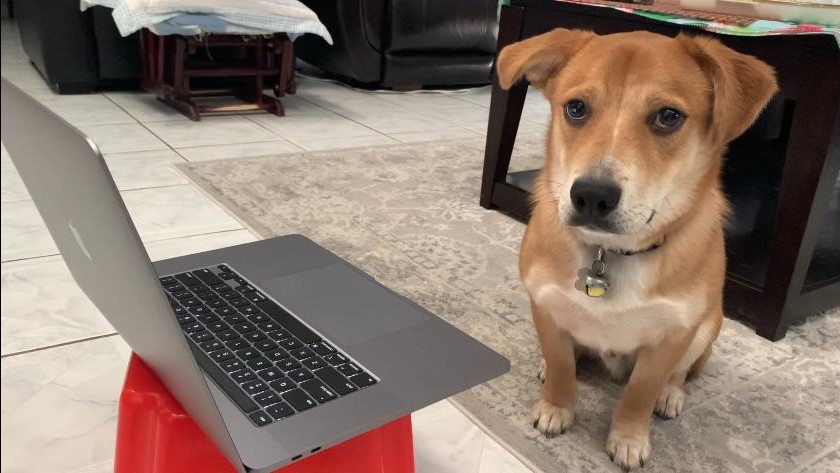

Hello! This is a Kanji Drawing Practice Website developed by Kenneth Le.
"If you can draw it with a mouse, you can draw it by hand!" - Me
Navigation
Click on the tab to choose the corresponding chapter you want to study.
Inside of the tab, you will find many Kanji, to study a specific Kanji, click on it.
Once you have clicked on it, a scroll will pop up, allowing you to draw on it and follow the Kanji tracing lines.
Inside of the Kanji Page
You can click on the right and left arrows to switch to a different page for that Kanji. This will let you study different meanings for that Kanji.
Click on the clear button if you would like to erase your writing.
Finally, once you are done, you can click on the "X" in the top right corner of the scroll to exit out of the page.
Quizzing
To quiz, click on the quiz button when you open one of the chapter tabs.
Now, you can click on which Kanji you would like to quiz over, if you would like to quiz over all of the Kanji of this chapter, then you can click on the Select All button.
You can click on a Kanji again if you have changed your mind about quizzing over that Kanji, or click the cancel button if you have decided not to quiz at all.
Once you have finished choosing which Kanji you would like to quiz over, click the confirm button.
The scroll will pop up, and you'll be presented with a blank scroll, and some English and Hiragana.
Given the English and Hiragana equivalent translations, write the corresponding Kanji out onto the scroll. You can check your answer by clicking the Check button at the bottom of the scroll.
Once you have checked your writing, you can try that page again using the Try Again button, or move onto the next page by clicking on the right arrow.
Once you have reached the end of the quiz, the scroll will close and you will be done!
- Number Keys (1 - 0) Open Corresponding Tab
- Left and Right Arrow Keys Change Kanji Page
- Esc Key Exit Kanji Page
- C Key or Backspace Clear Kanji Page
- Z Key Undo
- F Key Show Correct Kanji or Try Same Page Again
Hello Again!
Hello!
This website was developed by Kenneth Le. At the time of this website's creation, I'm a sophomore at UT Austin taking 610D Japanese. I made this website to assist students learning Japanese, and as a student myself, I know how difficult Kanji is to memorize the meaning and how to draw it. I found myself often being able to recognize the meaning of each Kanji when I see it, however, if I was asked to write it out, then I would suddenly be lost. I hope that this website will help you draw Kanji!
If you run into any bugs, or if you have any suggestions about anything I should add to the website then please email me! Any sort of feedback would be great, if you think that adding some functions would help convenience or help the learning process, then please, email me. My email is lekenneth77@gmail.com
Special thanks to Cooke-Sensei, Suito-Sensei, the rest of the UT Japanese Department, and you!
ありがとう！
がんばって！！！
